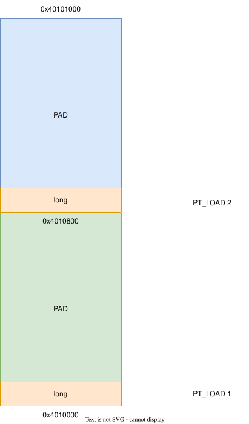
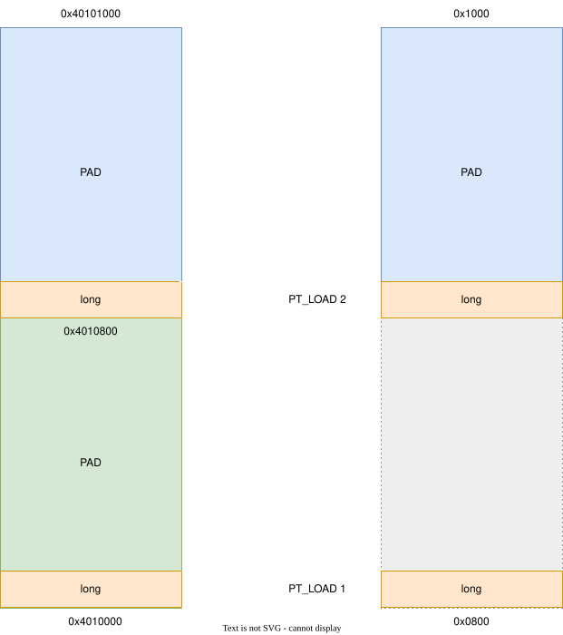
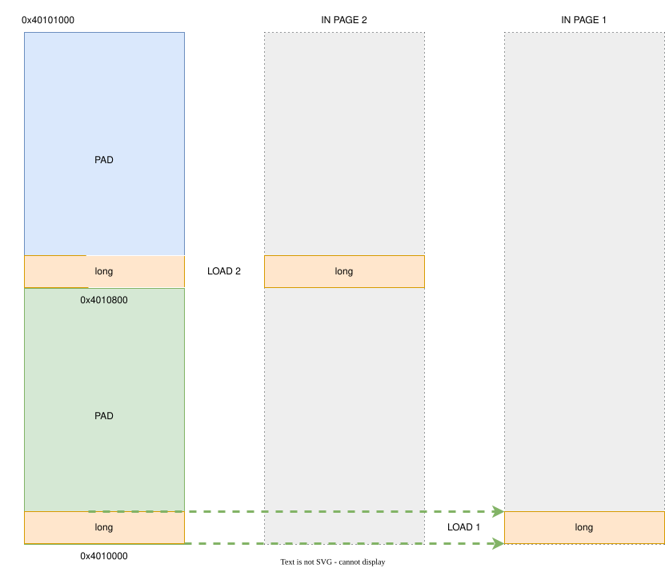
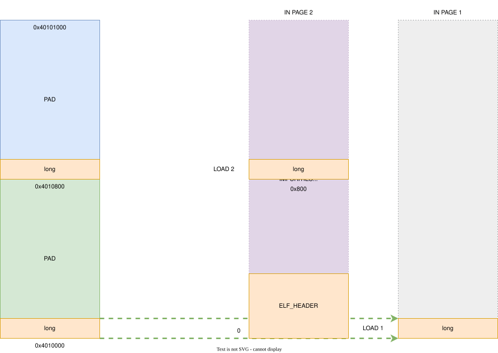

elf-02 overlap 与 dynamic
瞎折腾: https://github.com/ljqaq233/labs
HobbyOS: https://github.com/ljqaq233/textos-dev
layout: center¶
overlap¶
zoom: 0.7 layout: two-cols

::right::
需要构造如 图左 所示的 overlap 的结构
overlap: 不是一个专有的术语, 这里是我用于指代 - 经过 对齐 后, 前一个段的尾部与下一个段的头部 重合的情况
-
构造两个段, 使得它们 overlap
-
段所在的页中 与 页尾放两个
long值 -
程序 读出
long查看 数据是否正确 来验证 是否正确加载
layout: two-cols layoutClass: gap-04
````md magic-move
::right::
只有 两个段, 显然不是我们想要的结果
:pt_1/:pt_2- 指定放到哪一个 segment
- linker script
PHDRS指令
pt_1 PT_LOAD FLAGS(4);_name-pt_1p_type-PT_LOADp_flags-4 = PF_R
将 .text 命名 并纳入 PHDRS
layout: two-cols layoutClass: gap-06
现在的状态 (示意图):

::right::
- 类似于 "对等映射" 的状态
- 内存中两个段的 相对关系 与文件中并无差别
- 也就是说, 无论是将
LOAD1/LOAD2给加载到内存中, 由于向下对齐, 两个 segment 都会被正确加载, 因为它们在文件中处于相同的页面, 且反应了 "真实的地址空间"
- 如果 有差别, 会发生什么, 也就是 打乱 "对等映射"
zoom: 0.68¶
如果 有差别, 会发生什么, 也就是 打乱 "对等映射"
为了 使得 两个段 在文件中 位于不同的 "页"

layout: two-cols layoutClass: gap-04
从一个不可控的方式说起¶
HACK
````md magic-move <<< ./snippets/2-4.ld c <<< ./snippets/same-page.ld c
1 2 3 4 5 6 7 8 9 10 11 12 13 14 15 16 17 18 19 20 21 22 23 24 25 26 27 28 29 30 31 32 33 34 35 36 37 38 39 40 41 42 43 44 45 46 47 48 49 50 51 52 53 54 55 56 57 58 59 60 61 62 63 64 65 66 67 68 69 70 71 72 73 74 75 76 77 78 79 80 81 82 83 84 85 86 87 88 89 90 91 92 93 94 95 96 97 98 99 100 101 102 103 104 105 106 107 108 109 110 111 112 113 114 115 116 117 118 119 120 121 122 123 124 125 126 127 128 129 130 131 132 133 134 135 136 137 138 139 140 141 142 143 144 145 146 147 148 149 150 151 152 153 154 155 156 157 158 159 160 161 162 163 164 165 166 167 168 169 170 171 172 173 174 175 176 177 178 179 180 181 182 183 184 185 186 187 188 189 190 191 192 193 194 195 196 197 198 199 200 201 202 203 204 205 206 207 208 209 210 211 212 213 214 215 216 217 218 219 220 221 222 223 224 225 226 227 228 229 230 231 232 233 234 235 236 237 238 239 240 241 242 243 244 245 246 247 248 249 250 251 252 253 254 255 256 257 258 259 260 261 262 263 264 265 266 267 268 269 270 271 272 273 274 275 276 277 278 279 280 281 282 283 284 285 286 287 288 289 290 291 292 293 294 295 296 297 298 299 300 301 302 303 304 305 306 307 308 309 310 311 312 313 314 315 316 317 318 319 320 321 322 323 324 325 326 327 328 329 330 331 332 333 334 335 336 337 338 339 340 341 342 343 344 345 346 347 348 349 350 351 352 353 354 355 356 357 358 359 360 361 362 363 364 365 366 367 368 369 370 371 372 373 374 375 376 377 378 379 380 381 382 383 384 385 386 387 388 389 390 391 392 393 394 395 396 397 398 399 400 401 402 403 404 405 406 407 408 409 410 411 412 413 414 415 416 417 418 419 420 421 422 | |
::right::
prev_mend-previous mend
用对齐后的 memory end 做比较确定 overlap
计算 overlap 区域的大小
偏移 各个描述映射的值
msize;moff (化简 = prev_mend);fsize;foff;
计算读取参数
用 read 读入
- 有没有更好的方法?
这时 直接 写入可能 没有 PROT_WRITE 权限, read() = -1 (EFAULT)
mprotect
恢复临时的 PROT_WRITE 权限
但是, overlap 的部分的权限应该 同时满足两个段 的需求 (impurities 的几种情况 TIS ELF v1.2 spec)
这时, 需要取 并集, 对于 撤销的情况, 也可以并入这个 if 分支
更新状态
注意 映射相关的参数 的计算
moff = prev_mendfsize/msize可能为 0- 而
mmap拒绝map_size = 0
对 fsize 的判断是必须的
layout: center¶
dynamic¶
实现 dynamic 之后, 可以加载 static-pie 链接的程序
这是最基本, 最粗浅的目标.
简而言之:
- 寻找一个
virtual memory base address(以下简写virt) - 逐段加载到
virt
注意:
ET_DYN的放行
问题:
-
分配
elf需要的内存用mmap -
但是, 如果随便选择一个地址, 无法确保这个区域 (这一大块连续虚拟内存) 内的页都为我们所用
-
而且, 在 不访问
/proc/self的情况下, 了解地址空间有困难 -
所以, 还是交给 mmap 比较不错
那么怎么一开始就薅到一块连续的内存, 保证它之后只为我们所用呢?
在 manual 中:
用这个权限可以让它看似已经分配, 却没有实际用上
而且 mmap 有 懒分配 的机制, 加上这个权限, 不用当心浪费内存
When MAP_FIXED is set in the flags argument, the implementation is informed that the value of pa shall be addr, exactly. If MAP_FIXED is set, mmap() may return MAP_FAILED and set errno to [EINVAL]. If a MAP_FIXED request is successful, then any previous mappings or memory locks for those whole pages con‐taining any part of the address range [pa,pa+len) shall be removed, as if by an appropriate call to munmap(), before the new mapping is established.
where: pa is the address at which the mapping was placed (pa)
用这个试试?
md magic-move
将涉及到 elf 的 p_vaddr 的地址加上一个偏移就好了
c
- void *start = cast(void *, ehdr->e_entry);
+ void *start = virt + ehdr->e_entry;
printf("start is at %p\n", start);
c
if (!(prev_prot & PROT_WRITE))
mprotect(cast(void *, orig_moff), overlapped, prev_prot | PROT_WRITE);
lseek(fd, phdr->p_offset, SEEK_SET);
- read(fd, cast(void *, phdr->p_vaddr), readsz);
+ read(fd, virt + phdr->p_vaddr, readsz);
if ((prev_prot & prot) != prot ||
!(prev_prot & PROT_WRITE) && !(phdr->p_flags & PF_W))
mprotect(cast(void *, orig_moff), overlapped, prev_prot | prot);
c
- void *exp = cast(void *, moff);
+ void *exp = virt + moff;
printf(" map %#zx -> %p, sz = %#zx, msz = %#zx\n", foff, exp, fsize,
msize);
简单的测试运行不必多说.
```makefile asm.out: ../asm.S $(CC) $< -o $@ -static -nostdlib -ffreestanding
+asm-pie.out: ../asm.S + $(CC) $< -o $@ -static-pie -nostdlib -ffreestanding + .PHONY:all ```
原来写死地址的做法就不行了, 得用 pie 的方式, 或者说写 pic (位置无关代码)
常用的是 rip 相对寻址
asm
_start:
movq $1, %rax
movq $1, %rdi
- movq $msg, %rsi
+ leaq msg(%rip), %rsi
movq $len, %rdx
syscall
txt
$ elf-02/elf.out elf-02/asm-pie.out
map 0 -> 0x7c272ed3e000, sz = 0x1000, msz = 0x1000
map 0x1000 -> 0x7c272ed3f000, sz = 0x1000, msz = 0x1000
map 0x2000 -> 0x7c272ed40000, sz = 0x1000, msz = 0x1000
map 0x2000 -> 0x7c272ed41000, sz = 0x2000, msz = 0x2000
start is at 0x7c272ed3f000
Hello world!
layout: center¶
后记¶
之前...
获得一个一个不常规的值, 但它却不是 垃圾数据, 可以猜一下它是什么
$ ./a.out
282584257676671
987654321
shell
$ python -c "import struct; print(struct.pack('<q', 282584257676671))"
python
b'\x7fELF\x02\x01\x01\x00'
这就是 elf 头部
elf generated from same-page.S
md {*|8,9}
Program Headers:
Type Offset VirtAddr PhysAddr
FileSiz MemSiz Flags Align
LOAD 0x0000000000001000 0x0000000000400000 0x0000000000400000
0x00000000000000a8 0x00000000000000a8 R E 0x1000
LOAD 0x0000000000002000 0x0000000000401000 0x0000000000401000
0x0000000000000008 0x0000000000000008 R 0x1000
LOAD 0x0000000000000800 0x0000000000401800 0x0000000000000800
0x0000000000000008 0x0000000000000008 R 0x1000
会把 文件偏移量 为 0 的页给加载上去, 而 linux kernel 在后面加载的页会覆盖前面的页
这样, 在 虚拟地址原本是 int1 的位置, 反而读出了 magic number
zoom: 0.7¶

- 遍历所有的
PT_LOAD的来更新lp_max/lp_min映射范围意义?
c
if (phdr->p_type == PT_LOAD) {
uintptr_t dptr = align_dn(phdr->p_vaddr, phdr->p_align);
uintptr_t uptr = align_up(phdr->p_vaddr + phdr->p_memsz, phdr->p_align);
if (dptr < lp_min)
lp_min = dptr; // loadable program header minimal vaddr
if (uptr > lp_max)
lp_max = uptr; // loadable program header maximal vaddr
if (phdr->p_type == PT_INTERP)
assert(!"ldso not supported!!!");
}
- 可能没有意义
PT_LOAD - The array element specifies a loadable segment, described by p_filesz and p_memsz. The bytes from the file are mapped to the beginning of the memory segment. If the segment's memory size (p_memsz) is larger than the file size (p_filesz), the "extra'' bytes are defined to hold the value 0 and to follow the segment's initialized area. The file size may not be larger than the memory size. Loadable segment entries in the program header table appear in ascending order, sorted on the p_vaddr member.
- 这么写就变成了 防御性编程
- 为什么需要选取一个
base?
- 不选也可以, 只是需要保证
PT_LOAD间距符合p_vaddr的间距, 段之间的相对偏移必须与p_vaddr保持一致, 这一点我们在之前EFI文件关于 PIC 的位置讲过
- 关于
p_paddr
物理地址, 操作系统内基本不用
loader 可能会用
- grub2
- QEMU
-kernel
- 关于 overlap?
有一些情况被 TIS ELF 特别指出了
Up to four file pages hold impure text or data depending on page size and file system block size. - The first text page contains the ELF header, the program header table, and other information. - The last text page holds a copy of the beginning of data. - The first data page has a copy of the end of text. - The last data page can contain file information not relevant to the running process.
The end of the data segment requires special handling for uninitialized data, which the system defines to begin with zero values. Thus if a file's last data page includes information not in the logical memory page, the extraneous data must be set to zero, not the unknown contents of the executable file.
Impurities in the other three pages are not logically part of the process image; whether the system expunges them is unspecified.